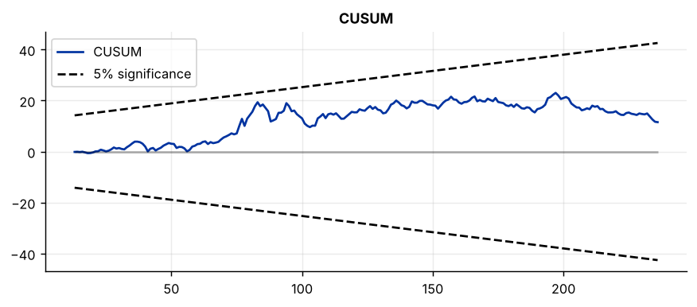
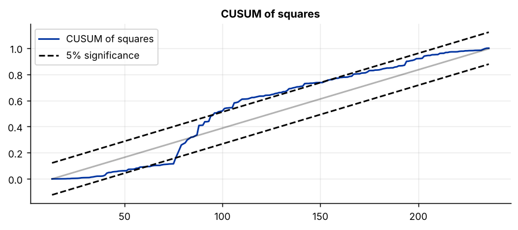

Step 1The question and the model
The question is: what determines the 10-year Treasury yield in the long run? The Fisher relation says nominal yields should rise with inflation; the business cycle, measured by GDP growth and unemployment, may also matter.
The model selection tool found a mix: the yield and inflation are I(1), while GDP growth and unemployment are I(0). This rules out the Johansen approach, which needs every variable to be I(1), and it rules out OLS in levels. The autoregressive distributed lag (ARDL) model of Pesaran, Shin and Smith (2001) is built for exactly this case. Its bounds test for a long-run relationship is valid whether the regressors are I(0), I(1) or a mixture.
The ARDL(\(p, q_1, q_2, q_3\)) model includes lags of the dependent variable and of each regressor:
It can be rewritten in error-correction form, which separates the long run from the short run:
The one condition you must check
ARDL allows I(0) and I(1) variables, but no variable may be I(2). With an I(2) variable the critical values of the bounds test are not valid. The model selection tool checks this for you; in a paper, report unit-root tests on first differences to prove it.
How to write it: model section
Unit-root tests indicate that the 10-year yield and inflation are I(1) while GDP growth and the unemployment rate are I(0), and that no variable is I(2). Since the variables are integrated of different orders, we use the ARDL bounds-testing approach of Pesaran, Shin and Smith (2001), which remains valid for any mixture of I(0) and I(1) regressors. The model is estimated in its unrestricted error-correction form, \(\Delta y_t = c + \rho y_{t-1} + \sum_j \delta_j x_{j,t-1} + \sum_i \gamma_i \Delta y_{t-i} + \sum_j \sum_i \lambda_{j,i} \Delta x_{j,t-i} + \varepsilon_t\), where the long-run effect of \(x_j\) on the yield is \(-\delta_j/\rho\).
Step 2Load the data and confirm the orders of integration
import pandas as pd
import numpy as np
import matplotlib.pyplot as plt
import statsmodels.api as sm
from statsmodels.tsa.stattools import adfuller
from statsmodels.tsa.ardl import ARDL, UECM, ardl_select_order
df = pd.read_csv("yield.csv").set_index("date")
df.index = pd.PeriodIndex(df.index, freq="Q").to_timestamp()
df.index.freq = "QS"
y = df["yield_10y"]
X = df[["inflation", "gdp_growth", "unemployment"]]
print(f"{'variable':14s}{'ADF p, level':>14s}{'ADF p, 1st diff.':>18s}{'order':>8s}")
for col in df:
p0 = adfuller(df[col], autolag="AIC")[1]
p1 = adfuller(df[col].diff().dropna(), autolag="AIC")[1]
print(f"{col:14s}{p0:14.3f}{p1:18.3f}{'I(0)' if p0 < 0.05 else 'I(1)' if p1 < 0.05 else 'I(2)?':>8s}")variable ADF p, level ADF p, 1st diff. order yield_10y 0.812 0.000 I(1) inflation 0.190 0.000 I(1) gdp_growth 0.000 0.000 I(0) unemployment 0.045 0.000 I(0)
How to read it
Two variables are I(1) and two are I(0). No first difference has a unit root, so nothing is I(2) and ARDL can be used.
The unemployment rate has a p-value of 0.045, right at the border. With Johansen you would have to decide whether it is I(0) or I(1), and the decision would change the model. With ARDL the answer does not matter. That robustness to borderline cases is the main practical reason the method is so widely used.
Step 3Choose the lag orders
ARDL lets every variable have its own lag length. The search tries all combinations up to a maximum and keeps the one with the lowest information criterion.
for ic in ("aic", "bic"):
sel = ardl_select_order(y, maxlag=4, exog=X, maxorder=4, ic=ic, trend="c")
print(f"{ic.upper()}: lags of the yield = {sel.model.ar_lags}, lags of regressors = {sel.model.dl_lags}")AIC: lags of the yield = [1, 2, 3], lags of regressors = {'inflation': [0, 1, 2], 'unemployment': [0, 1, 2, 3]}
BIC: lags of the yield = [1, 2], lags of regressors = {'inflation': [0], 'unemployment': [0, 1, 2]}How to read it
AIC picks 3 lags of the yield, lags 0–2 of inflation and 0–3 of unemployment. BIC picks a smaller model, as usual. Use 4 as the maximum for quarterly data and 12 for monthly data unless your sample is short.
Notice that GDP growth does not appear at all: the search found that the model fits better without it. This is itself a result. Whether to keep such a variable is a judgement: if it is part of your research question, keep it with one lag and report that it is insignificant; if it was only a control, you may drop it. Here it is part of the question, so we keep it.
order = {"inflation": 2, "gdp_growth": 1, "unemployment": 3}
ardl = ARDL(y, lags=3, exog=X, order=order, trend="c").fit()
print(ardl.summary().tables[1])===================================================================================
coef std err z P>|z| [0.025 0.975]
-----------------------------------------------------------------------------------
const 0.0163 0.123 0.133 0.894 -0.225 0.258
yield_10y.L1 1.2317 0.065 18.933 0.000 1.103 1.360
yield_10y.L2 -0.4211 0.099 -4.268 0.000 -0.615 -0.227
yield_10y.L3 0.1448 0.063 2.299 0.022 0.021 0.269
inflation.L0 0.1075 0.027 3.924 0.000 0.054 0.162
inflation.L1 -0.0971 0.033 -2.948 0.004 -0.162 -0.032
inflation.L2 0.0780 0.028 2.769 0.006 0.022 0.133
gdp_growth.L0 0.0131 0.011 1.214 0.226 -0.008 0.034
gdp_growth.L1 0.0058 0.011 0.536 0.593 -0.015 0.027
unemployment.L0 -0.5661 0.139 -4.076 0.000 -0.840 -0.292
unemployment.L1 1.1536 0.235 4.916 0.000 0.691 1.616
unemployment.L2 -0.8898 0.244 -3.640 0.000 -1.372 -0.408
unemployment.L3 0.2862 0.123 2.325 0.021 0.044 0.529
===================================================================================How to read it
This is the model in levels, ARDL(3, 2, 1, 3). The coefficients on individual lags alternate in sign and have no direct interpretation. For example, unemployment has coefficients of −0.58, +1.13, −0.85 and +0.28. What matters is their sum relative to the persistence of the yield, which the next steps compute. Never interpret single lag coefficients from this table in a paper.
Step 4The bounds test: is there a long-run relationship?
The bounds test is an F-test of the null hypothesis that the level terms in the error-correction form are jointly zero, which means no long-run relationship. It has two critical values instead of one.
| F-statistic is… | Conclusion |
|---|---|
| above the upper bound | Reject the null: a long-run relationship exists |
| below the lower bound | Do not reject: no long-run relationship |
| between the bounds | Inconclusive |
uecm = UECM(y, lags=3, exog=X, order=order, trend="c").fit()
bounds = uecm.bounds_test(case=3)
print(f"Bounds F-statistic = {bounds.statistic:.2f}\n")
print("Critical values lower I(0) upper I(1)")
for level, row in bounds.critical_values.iterrows():
print(f" {100 - level:4.1f}% level {row['lower']:10.2f}{row['upper']:13.2f}")Bounds F-statistic = 8.18
Critical values lower I(0) upper I(1)
10.0% level 2.46 3.52
5.0% level 2.88 4.01
1.0% level 3.78 5.05
0.1% level 4.99 6.40How to read it
The F-statistic of 8.18 is above the upper bound at every significance level, including 6.40 at the 0.1% level. The null of no long-run relationship is rejected: the yield, inflation, growth and unemployment are tied together in the long run.
case=3 means an unrestricted constant and no trend, the usual choice when the dependent variable has no deterministic trend. Always state the case in the paper, because the critical values depend on it. If the statistic had fallen below the lower bound, you would stop here and estimate the model in first differences only.
Step 5Long-run coefficients
long_run = pd.DataFrame({"coefficient": -uecm.ci_params, "std. error": uecm.ci_bse, "p-value": uecm.ci_pvalues}).drop("yield_10y")
print(long_run.round(3))coefficient std. error p-value const 0.366 2.751 0.894 inflation 1.982 0.445 0.000 gdp_growth 0.423 0.340 0.213 unemployment -0.360 0.464 0.438
How to read it
statsmodels reports the long-run relation as a vector with the dependent variable normalised to 1, so the signs must be reversed to write it as an equation. The code above does this. The result is
yield = 0.37 + 1.98 × inflation + 0.42 × GDP growth − 0.36 × unemployment
- Inflation is the only significant long-run determinant. A permanent 1-point rise in inflation raises the 10-year yield by about 2 points in the long run. The Fisher relation predicts at least 1; values above 1 are common because investors also require compensation for taxes and inflation risk.
- GDP growth and unemployment have the expected signs but are not significant: the business cycle does not shift the yield permanently.
Step 6The error-correction form: short-run dynamics and speed of adjustment
print(uecm.summary().tables[1])
rho = uecm.params["yield_10y.L1"]
print(f"\nSpeed of adjustment = {rho:.4f} -> {abs(rho) * 100:.1f}% of a gap closes each quarter")
print(f"Half-life = {np.log(0.5) / np.log(1 + rho):.1f} quarters")=====================================================================================
coef std err z P>|z| [0.025 0.975]
-------------------------------------------------------------------------------------
const 0.0163 0.123 0.133 0.894 -0.225 0.258
yield_10y.L1 -0.0446 0.013 -3.543 0.000 -0.069 -0.020
inflation.L1 0.0884 0.016 5.449 0.000 0.056 0.120
gdp_growth.L1 0.0189 0.015 1.232 0.219 -0.011 0.049
unemployment.L1 -0.0160 0.019 -0.857 0.392 -0.053 0.021
D.yield_10y.L1 0.2763 0.064 4.333 0.000 0.151 0.402
D.yield_10y.L2 -0.1448 0.063 -2.299 0.022 -0.269 -0.021
D.inflation.L0 0.1075 0.027 3.924 0.000 0.054 0.162
D.inflation.L1 -0.0780 0.028 -2.769 0.006 -0.133 -0.022
D.gdp_growth.L0 0.0131 0.011 1.214 0.226 -0.008 0.034
D.unemployment.L0 -0.5661 0.139 -4.076 0.000 -0.840 -0.292
D.unemployment.L1 0.6036 0.153 3.935 0.000 0.301 0.906
D.unemployment.L2 -0.2862 0.123 -2.325 0.021 -0.529 -0.044
=====================================================================================
Speed of adjustment = -0.0446 -> 4.5% of a gap closes each quarter
Half-life = 15.2 quartersHow to read it
- The error-correction coefficient is the one on
yield_10y.L1: −0.045. It must be negative and significant for the long-run relationship to pull the yield back. It is, but it is small: only 4.5% of a deviation is corrected per quarter, so half of a gap remains after about 15 quarters. Long-term yields adjust slowly. - Short-run coefficients are the ones starting with
D.. A rise in inflation raises the yield immediately (D.inflation.L0= 0.11), and a rise in unemployment lowers it sharply within the quarter (D.unemployment.L0= −0.57), consistent with yields falling in recessions. So unemployment matters in the short run even though it has no long-run effect. That distinction is what the error-correction form is for.
The t-statistic on the error-correction coefficient does not follow the standard t distribution. Use the bounds test for the existence of the relationship, and report the coefficient for its sign and size.
How to write it: long-run and short-run results
The bounds F-statistic of 8.18 exceeds the upper critical bound at the 1% level (5.05), so the null hypothesis of no long-run relationship is rejected. The estimated long-run coefficients (Table 3) show that inflation is the dominant long-run determinant of the 10-year yield: a one-percentage-point increase in inflation raises the yield by 1.98 percentage points (s.e. 0.45). The long-run effects of GDP growth and unemployment are statistically insignificant. The error-correction coefficient is −0.045 and significant at the 1% level, which implies that 4.5% of any deviation from the long-run relationship is corrected each quarter, a half-life of about 15 quarters. In the short run, a one-point rise in the unemployment rate lowers the yield by 0.57 points within the quarter. The long-run relationship is identified from the full sample; in the 1990–2019 subsample, when inflation was low and stable, the bounds test does not reject the null of no long-run relationship.
Step 7Diagnostic and stability tests
The bounds test assumes serially uncorrelated errors, so that test matters most. The error-correction model is a linear regression, so it can be refitted by OLS to use the standard tests.
from statsmodels.stats.diagnostic import acorr_breusch_godfrey, het_white, het_arch, breaks_cusumolsresid
from statsmodels.stats.stattools import jarque_bera
ols = sm.OLS(uecm.model._y, uecm.model._x).fit() # same regression, estimated by OLS
print(f"Breusch-Godfrey (4 lags): LM = {acorr_breusch_godfrey(ols, nlags=4)[0]:6.2f} p-value = {acorr_breusch_godfrey(ols, nlags=4)[1]:.3f}")
print(f"White heteroskedasticity: LM = {het_white(ols.resid, ols.model.exog)[0]:6.2f} p-value = {het_white(ols.resid, ols.model.exog)[1]:.3f}")
print(f"ARCH (4 lags): LM = {het_arch(ols.resid, nlags=4)[0]:6.2f} p-value = {het_arch(ols.resid, nlags=4)[1]:.3f}")
print(f"Jarque-Bera: JB = {jarque_bera(ols.resid)[0]:6.2f} p-value = {jarque_bera(ols.resid)[1]:.3f}")
print(f"CUSUM stability test: stat = {breaks_cusumolsresid(ols.resid, ddof=len(ols.params))[0]:6.2f} p-value = {breaks_cusumolsresid(ols.resid, ddof=len(ols.params))[1]:.3f}")Breusch-Godfrey (4 lags): LM = 5.94 p-value = 0.204 White heteroskedasticity: LM = 161.04 p-value = 0.000 ARCH (4 lags): LM = 11.00 p-value = 0.027 Jarque-Bera: JB = 36.31 p-value = 0.000 CUSUM stability test: stat = 0.78 p-value = 0.573
rec = sm.RecursiveLS(uecm.model._y, uecm.model._x).fit()
fig = plt.figure(figsize=(8, 3)); rec.plot_cusum(fig=fig); fig.axes[0].set_title("CUSUM")
fig2 = plt.figure(figsize=(8, 3)); rec.plot_cusum_squares(fig=fig2); fig2.axes[0].set_title("CUSUM of squares")

How to read it
- Serial correlation. Breusch–Godfrey does not reject (p = 0.20). The condition the bounds test needs is met. If it had rejected, the fix is to add lags.
- Heteroskedasticity. The White and ARCH tests reject. The coefficients are unaffected, but standard errors should be robust; the robustness table below re-estimates with HAC standard errors.
- Normality. Rejected, because of the large yield movements around 1980. With 237 observations, inference rests on large-sample results.
- CUSUM. The line stays well inside its 5% bounds and the test does not reject (p = 0.57): the coefficients are stable.
- CUSUM of squares. This one leaves the bounds, falling below them around observations 60–78 and rising above them around 100–150. The break is at about observation 80, which is 1980: the Volcker disinflation, when the volatility of yields jumped. CUSUM of squares detects instability in the variance, and that agrees with the heteroskedasticity tests.
So the mean relationship is stable but the error variance is not. Report both plots, name the episode responsible, and use robust standard errors. Do not show only the plot that passes.
Step 8Robustness checks
def run(y_, X_, lags, order_, **fit):
m = UECM(y_, lags=lags, exog=X_, order=order_, trend="c").fit(**fit)
b = m.bounds_test(case=3)
return b.statistic, b.critical_values.loc[95.0, "upper"], -m.ci_params["inflation"], m.ci_pvalues["inflation"], m.params["yield_10y.L1"]
cases = {
"Baseline ARDL(3,2,1,3)": (y, X, 3, order, {}),
"BIC lags ARDL(2,1,1,2)": (y, X, 2, {"inflation": 1, "gdp_growth": 1, "unemployment": 2}, {}),
"HAC standard errors": (y, X, 3, order, {"cov_type": "HAC", "cov_kwds": {"maxlags": 4}}),
"1960-2007 (pre-crisis)": (y[:"2007-12"], X[:"2007-12"], 3, order, {}),
"1960-1989": (y[:"1989-12"], X[:"1989-12"], 3, order, {}),
"1990-2019": (y["1990-01":], X["1990-01":], 3, order, {}),
}
print(f"{'':26s}{'bounds F':>9s}{'5% upper':>10s}{'LR inflation':>14s}{'p-value':>9s}{'adjustment':>12s}")
for name, (y_, X_, lags, order_, fit) in cases.items():
f, cv, lr, p, rho_ = run(y_, X_, lags, order_, **fit)
print(f"{name:26s}{f:9.2f}{cv:10.2f}{lr:14.2f}{p:9.3f}{rho_:12.3f}")bounds F 5% upper LR inflation p-value adjustment Baseline ARDL(3,2,1,3) 8.18 4.01 1.98 0.000 -0.045 BIC lags ARDL(2,1,1,2) 6.13 4.01 1.97 0.000 -0.037 HAC standard errors 8.18 4.01 1.98 0.001 -0.045 1960-2007 (pre-crisis) 8.61 4.01 2.17 0.007 -0.047 1960-1989 6.67 4.01 2.12 0.024 -0.053 1990-2019 2.25 4.01 1.59 0.047 -0.055
How to read it
- Lag choice and standard errors do not matter. The BIC specification and HAC standard errors leave the long-run inflation coefficient at about 2 and strongly significant.
- The pre-crisis sample agrees. Ending in 2007 gives a slightly larger coefficient (2.17) and a higher bounds F-statistic.
- The relationship is not found after 1990. In 1990–2019 the bounds F-statistic is 2.25, which is below even the lower bound, so the null of no long-run relationship cannot be rejected in that period. Inflation was low and stable after 1990, so there is little variation left to identify its long-run effect on yields.
The long-run link between inflation and the yield is identified mainly from the high-inflation decades before 1990. That is a limitation of the result and it belongs in the paper, in the robustness section and in the conclusion.
Step 9Write the paper
| Section | What goes in it | From which step |
|---|---|---|
| Data | Sources, sample, unit-root tests on levels and first differences | Step 2 |
| Method | Why ARDL, the equation, lag selection, the case for deterministic terms | Steps 1 and 3 |
| Cointegration | Bounds F-statistic with lower and upper critical values | Step 4 |
| Long-run results | Long-run coefficients as a table and as an equation | Step 5 |
| Short-run results | Error-correction coefficient, half-life, short-run coefficients | Step 6 |
| Robustness | Diagnostics, CUSUM plots, lag choice, subsamples | Steps 7 and 8 |
What a referee will ask
- Did you rule out I(2)? Show unit-root tests on first differences.
- Which case for the deterministic terms, and which critical values? State both. For samples under about 80 observations, use the small-sample critical values of Narayan (2005).
- Is the error-correction coefficient negative and significant? If it is positive or below −1, something is wrong with the specification.
- Are the residuals serially uncorrelated? The bounds test is not valid otherwise.
- Is the long-run relationship stable? Show CUSUM plots and subsamples.
- Are the regressors exogenous? ARDL assumes the dependent variable does not drive the regressors in the long run. If the yield could affect inflation, say so, or use a system method.